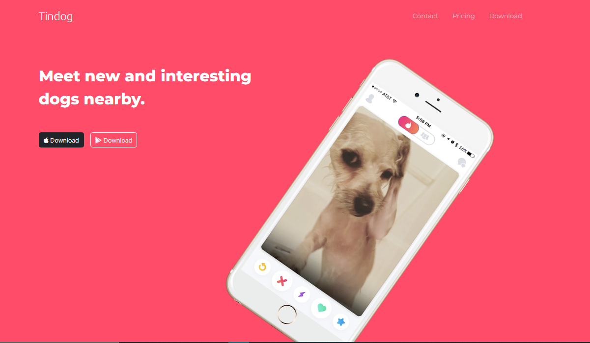
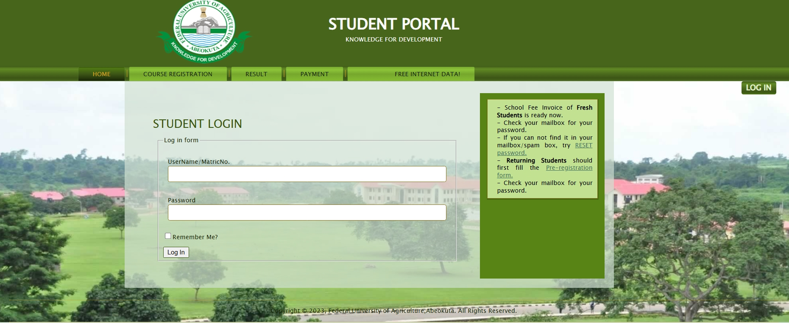
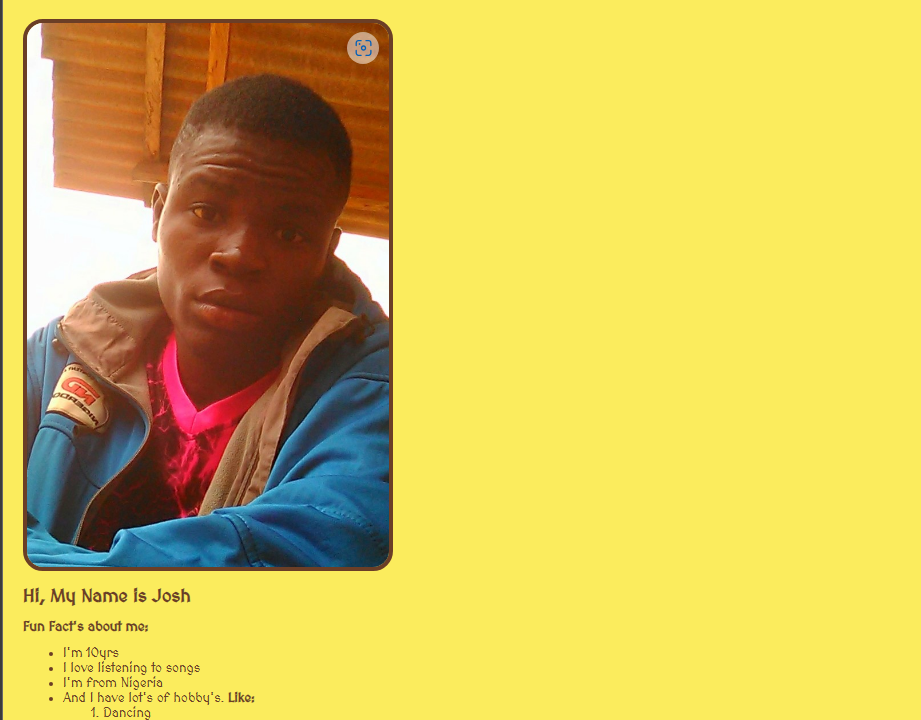

// projects
Things I've built
A selection of real, live projects — click to view.

Web App
TINDOG Platform
Conceptual pet adoption platform using HTML, CSS and Bootstrap.
Performance improved by 15% through code optimisation and
efficient asset loading.
⚙️
Automation
Automated Workflow System
Form-triggered automation connecting Google Sheets, Gmail, and
Slack with conditional logic for efficient data management and
team communication.

Web App
Omnifood Website
Fully responsive food ordering platform optimised for speed and
cross-device compatibility. Clean UI with fast load times.
⚙️
AI Integration
AI Agent Workflow
Context-aware chat system integrating Google Gemini's API with
memory storage and RSS feed tools for intelligent, real-time
responses. Built to demonstrate practical AI integration in web
environments.

UI Clone
FUNAAB Login Page Clone
Pixel-accurate clone of the Federal University of Agriculture,
Abeokuta login page — demonstrating precision in UI replication
and attention to detail.

Web Design
Personal Blog
A personal blog site built for easy reach and communication,
designed with a clean and user-friendly interface for readers to
engage with content.